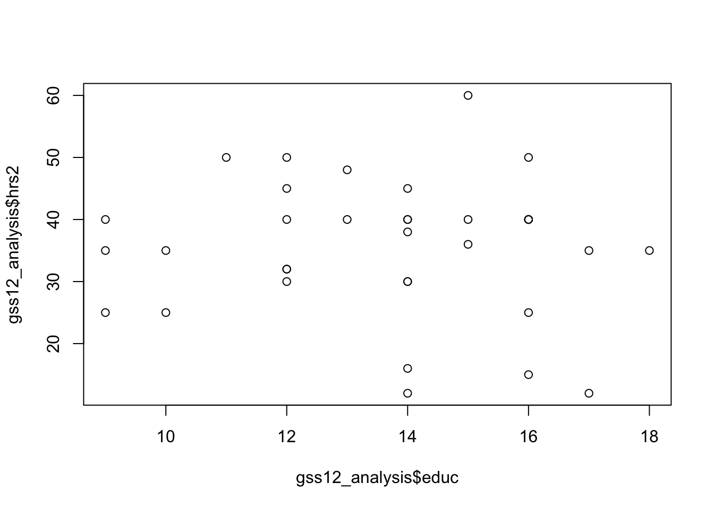
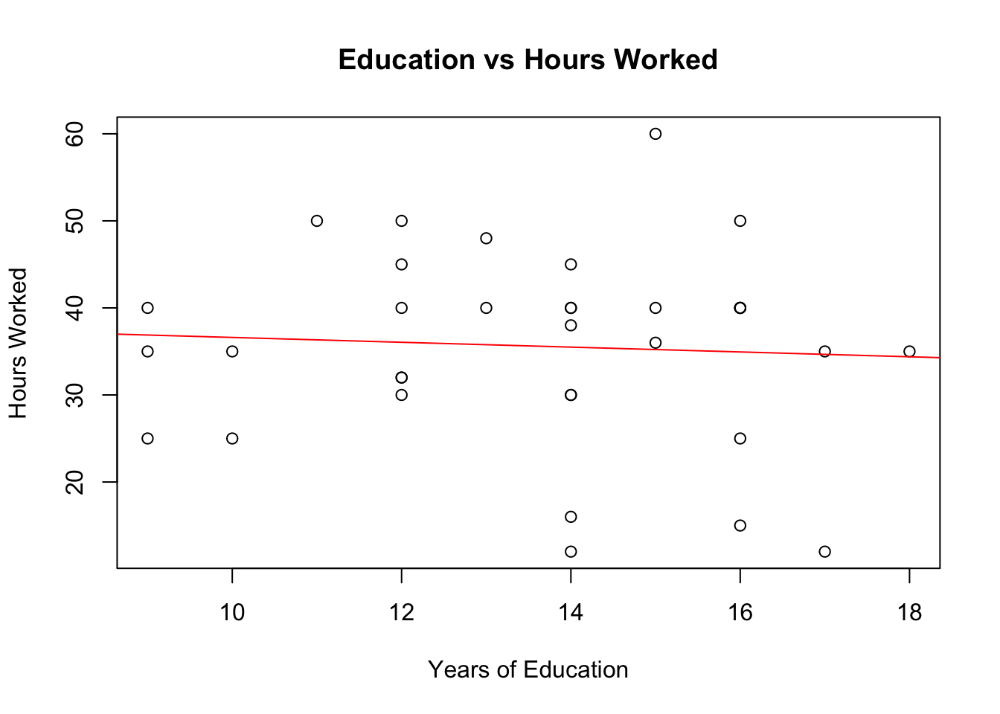
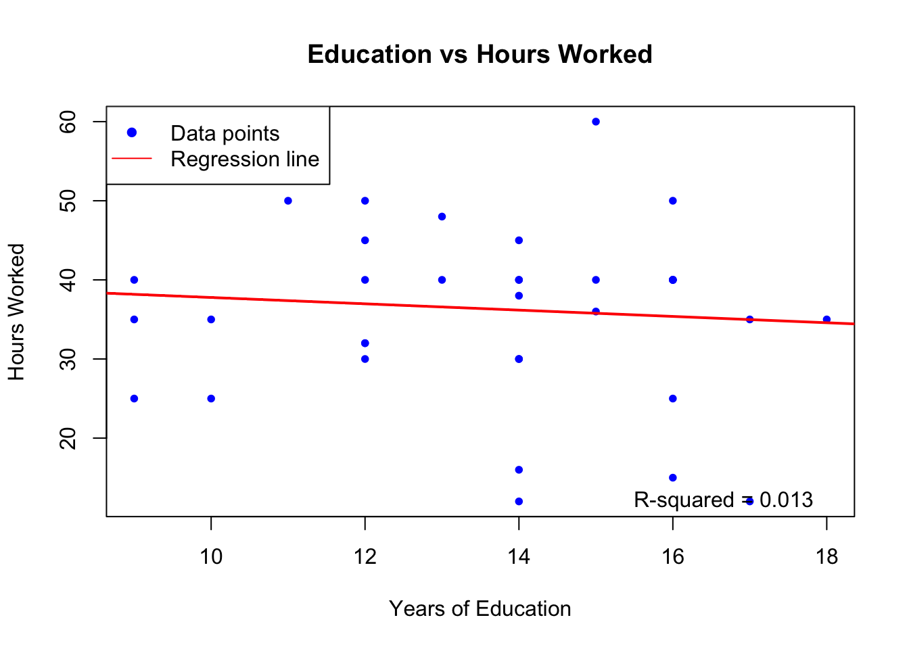
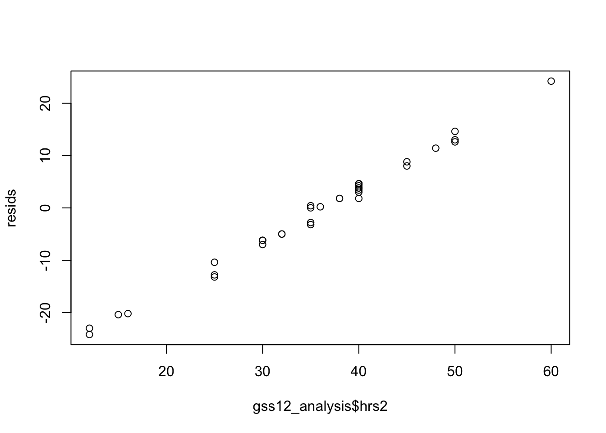
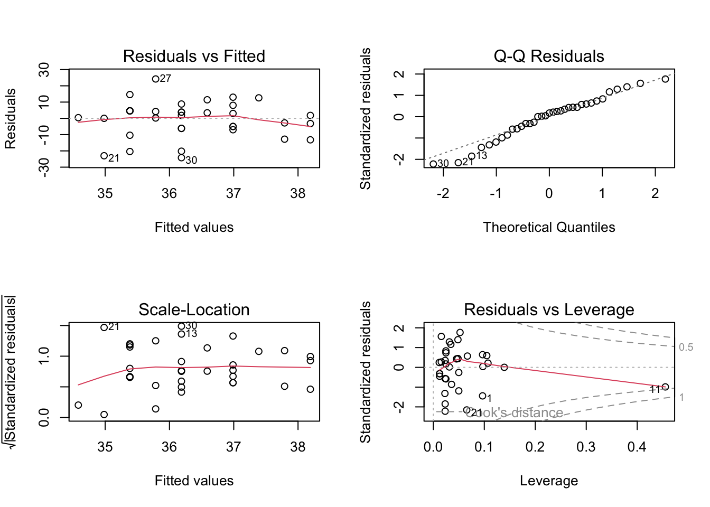
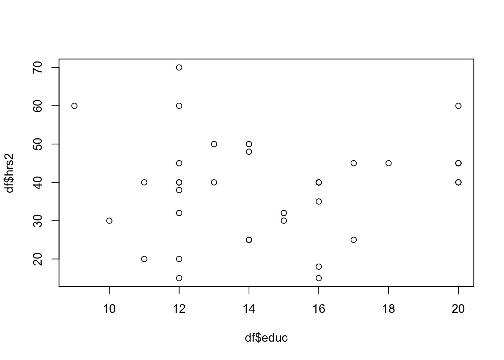
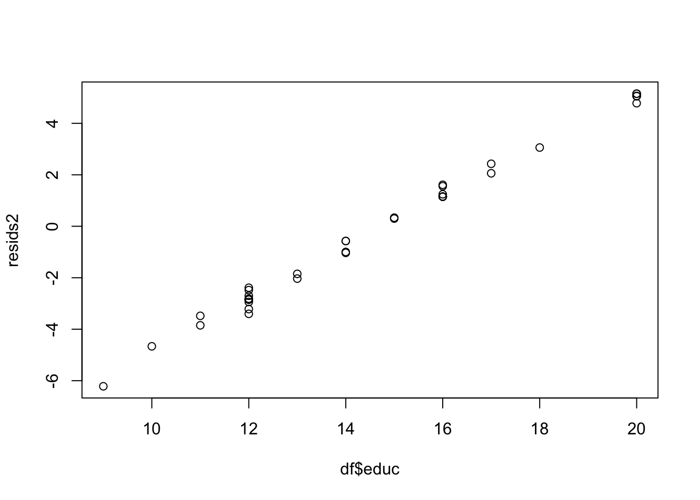
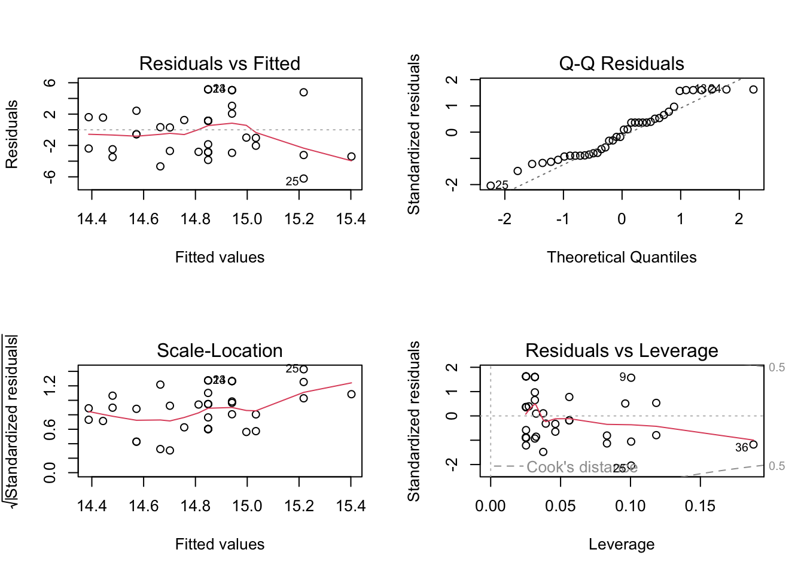

# install packages
install.packages("remotes", repos = "http://cran.us.r-project.org")
install.packages("tidyverse", repos = "http://cran.us.r-project.org")
install.packages("tidyr", repos = "http://cran.us.r-project.org")
# Install 'gssr' from 'ropensci' universe
install.packages('gssr', repos =
c('https://kjhealy.r-universe.dev', 'https://cloud.r-project.org'))
# Also recommended: install 'gssrdoc' as well
install.packages('gssrdoc', repos =
c('https://kjhealy.r-universe.dev', 'https://cloud.r-project.org'))
# load libraries
library(gssr)
library(dplyr)
library(tidyr)General Social Survey (GSS) data
The package gssr is located here.
We will run through a sample analysis using the gssr package.
Explore variables in the GSSR documentation file
# load the master documentation files
data(gss_all) # note that this is a large file of all GSS data
data(gssrdoc) # this is the documentation for the GSS dataWarning in data(gssrdoc): data set 'gssrdoc' not foundExamine the years available for any given variable
# check which years your variables are available
gss_which_years(gss_all, race)# A tibble: 34 × 2
year race
<dbl+lbl> <lgl>
1 1972 TRUE
2 1973 TRUE
3 1974 TRUE
4 1975 TRUE
5 1976 TRUE
6 1977 TRUE
7 1978 TRUE
8 1980 TRUE
9 1982 TRUE
10 1983 TRUE
# ℹ 24 more rowsgss_which_years(gss_all, sex)# A tibble: 34 × 2
year sex
<dbl+lbl> <lgl>
1 1972 TRUE
2 1973 TRUE
3 1974 TRUE
4 1975 TRUE
5 1976 TRUE
6 1977 TRUE
7 1978 TRUE
8 1980 TRUE
9 1982 TRUE
10 1983 TRUE
# ℹ 24 more rowsgss_which_years(gss_all, hrs2)# A tibble: 34 × 2
year hrs2
<dbl+lbl> <lgl>
1 1972 FALSE
2 1973 TRUE
3 1974 TRUE
4 1975 TRUE
5 1976 TRUE
6 1977 TRUE
7 1978 TRUE
8 1980 TRUE
9 1982 TRUE
10 1983 TRUE
# ℹ 24 more rowsgss_which_years(gss_all, educ)# A tibble: 34 × 2
year educ
<dbl+lbl> <lgl>
1 1972 TRUE
2 1973 TRUE
3 1974 TRUE
4 1975 TRUE
5 1976 TRUE
6 1977 TRUE
7 1978 TRUE
8 1980 TRUE
9 1982 TRUE
10 1983 TRUE
# ℹ 24 more rows# when you want to return information for multiple variables
gss_all %>%
gss_which_years(c(race, sex, hrs2, educ)) %>%
print(n = Inf)# A tibble: 34 × 5
year race sex hrs2 educ
<dbl+lbl> <lgl> <lgl> <lgl> <lgl>
1 1972 TRUE TRUE FALSE TRUE
2 1973 TRUE TRUE TRUE TRUE
3 1974 TRUE TRUE TRUE TRUE
4 1975 TRUE TRUE TRUE TRUE
5 1976 TRUE TRUE TRUE TRUE
6 1977 TRUE TRUE TRUE TRUE
7 1978 TRUE TRUE TRUE TRUE
8 1980 TRUE TRUE TRUE TRUE
9 1982 TRUE TRUE TRUE TRUE
10 1983 TRUE TRUE TRUE TRUE
11 1984 TRUE TRUE TRUE TRUE
12 1985 TRUE TRUE TRUE TRUE
13 1986 TRUE TRUE TRUE TRUE
14 1987 TRUE TRUE TRUE TRUE
15 1988 TRUE TRUE TRUE TRUE
16 1989 TRUE TRUE TRUE TRUE
17 1990 TRUE TRUE TRUE TRUE
18 1991 TRUE TRUE TRUE TRUE
19 1993 TRUE TRUE TRUE TRUE
20 1994 TRUE TRUE TRUE TRUE
21 1996 TRUE TRUE TRUE TRUE
22 1998 TRUE TRUE TRUE TRUE
23 2000 TRUE TRUE TRUE TRUE
24 2002 TRUE TRUE TRUE TRUE
25 2004 TRUE TRUE TRUE TRUE
26 2006 TRUE TRUE TRUE TRUE
27 2008 TRUE TRUE TRUE TRUE
28 2010 TRUE TRUE TRUE TRUE
29 2012 TRUE TRUE TRUE TRUE
30 2014 TRUE TRUE TRUE TRUE
31 2016 TRUE TRUE TRUE TRUE
32 2018 TRUE TRUE TRUE TRUE
33 2021 TRUE TRUE TRUE TRUE
34 2022 TRUE TRUE TRUE TRUE # loading single year data
gss12 <- gss_get_yr(2012)Fetching: https://gss.norc.org/documents/stata/2012_stata.zipgss22 <- gss_get_yr(2022)Fetching: https://gss.norc.org/documents/stata/2022_stata.zip# View(gss22)# select your variables for a single year using cross sectional file
gss12 %>%
select(race, sex, hrs2, educ, wtssall)# A tibble: 1,974 × 5
race sex hrs2 educ wtssall
<dbl+lbl> <dbl+lbl> <dbl+lbl> <dbl+lbl> <dbl+lbl>
1 1 [white] 1 [male] NA(i) [iap] 16 [4 years of college] 2.62
2 1 [white] 1 [male] NA(i) [iap] 12 [12th grade] 3.50
3 3 [other] 1 [male] NA(i) [iap] 12 [12th grade] 1.75
4 1 [white] 2 [female] NA(i) [iap] 13 [1 year of college] 1.24
5 2 [black] 2 [female] NA(i) [iap] 16 [4 years of college] 0.874
6 1 [white] 2 [female] NA(i) [iap] 19 [7 years of college] 0.824
7 1 [white] 2 [female] NA(i) [iap] 15 [3 years of college] 0.824
8 3 [other] 2 [female] NA(i) [iap] 11 [11th grade] 0.412
9 2 [black] 2 [female] NA(i) [iap] 9 [9th grade] 0.412
10 1 [white] 2 [female] NA(i) [iap] 17 [5 years of college] 0.412
# ℹ 1,964 more rowsgss12 %>%
select(race, sex, hrs2, educ, wtssall) %>%
count(race, sex, wtssall)# A tibble: 66 × 4
race sex wtssall n
<dbl+lbl> <dbl+lbl> <dbl+lbl> <int>
1 1 [white] 1 [male] 0.412 167
2 1 [white] 1 [male] 0.824 280
3 1 [white] 1 [male] 0.874 34
4 1 [white] 1 [male] 1.00 1
5 1 [white] 1 [male] 1.19 1
6 1 [white] 1 [male] 1.24 46
7 1 [white] 1 [male] 1.65 22
8 1 [white] 1 [male] 1.75 95
9 1 [white] 1 [male] 2.06 7
10 1 [white] 1 [male] 2.62 11
# ℹ 56 more rowsGet data via gss_all data set
We can use a more direct method but we must be careful about our outputs.
gss_all %>%
select(year, race, sex, hrs2, educ, wtssall, wtss, wtssnr) %>%
filter(year == 2014) %>%
drop_na() -> df
sapply(df, function(x) sum(is.na(x))) # take note that the hrs2 variable will cause issue year race sex hrs2 educ wtssall wtss wtssnr
0 0 0 0 0 0 0 0 df# A tibble: 40 × 8
year race sex hrs2 educ wtssall wtss wtssnr
<dbl+lbl> <dbl+lbl> <dbl+lbl> <dbl+lbl> <dbl+lbl> <dbl+lbl> <dbl+lbl> <dbl+>
1 2014 1 [white] 2 [female] 40 16 0.448 0.448 0.500
2 2014 2 [black] 2 [female] 50 14 1.38 1.38 1.54
3 2014 3 [other] 2 [female] 50 13 0.448 0.448 0.500
4 2014 2 [black] 2 [female] 45 18 0.690 0.690 0.770
5 2014 1 [white] 2 [female] 45 17 0.896 0.896 1.00
6 2014 2 [black] 2 [female] 32 12 0.690 0.690 0.735
7 2014 3 [other] 2 [female] 40 12 2.07 2.07 2.21
8 2014 1 [white] 2 [female] 15 12 0.896 0.896 0.954
9 2014 1 [white] 2 [female] 60 20 0.896 0.896 0.888
10 2014 1 [white] 1 [male] 40 16 0.896 0.896 0.923
# ℹ 30 more rowsModel 1
# select your variables for a single year using gss_all
gss_all %>%
filter(year == 2012) %>%
select(race, sex, hrs2, educ, wtssall, wtss, wtssnr)# A tibble: 1,974 × 7
race sex hrs2 educ wtssall wtss wtssnr
<dbl+lbl> <dbl+lbl> <dbl+lbl> <dbl+lbl> <dbl+lbl> <dbl+lbl> <dbl+lbl>
1 1 [white] 1 [male] NA(i) [iap] 16 2.62 2.62 2.87
2 1 [white] 1 [male] NA(i) [iap] 12 3.50 3.50 3.83
3 3 [other] 1 [male] NA(i) [iap] 12 1.75 1.75 1.91
4 1 [white] 2 [female] NA(i) [iap] 13 1.24 1.24 1.35
5 2 [black] 2 [female] NA(i) [iap] 16 0.874 0.874 0.957
6 1 [white] 2 [female] NA(i) [iap] 19 0.824 0.824 0.902
7 1 [white] 2 [female] NA(i) [iap] 15 0.824 0.824 0.902
8 3 [other] 2 [female] NA(i) [iap] 11 0.412 0.412 0.451
9 2 [black] 2 [female] NA(i) [iap] 9 0.412 0.412 0.451
10 1 [white] 2 [female] NA(i) [iap] 17 0.412 0.412 0.451
# ℹ 1,964 more rowsgss_all %>%
filter(year == 2018) %>%
select(race, sex, hrs2, educ, wtssall, wtss, wtssnr)# A tibble: 2,348 × 7
race sex hrs2 educ wtssall wtss wtssnr
<dbl+lbl> <dbl+lbl> <dbl+lbl> <dbl+lbl> <dbl+lbl> <dbl+lbl> <dbl+lbl>
1 1 [white] 1 [male] 41 14 2.36 2.36 2.75
2 1 [white] 2 [female] NA(i) [iap] 10 0.943 0.943 1.10
3 1 [white] 1 [male] NA(i) [iap] 16 0.943 0.943 1.10
4 1 [white] 2 [female] NA(i) [iap] 16 0.943 0.943 1.10
5 2 [black] 1 [male] NA(i) [iap] 18 0.943 0.943 1.10
6 1 [white] 2 [female] NA(i) [iap] 16 0.943 0.943 1.10
7 2 [black] 2 [female] NA(i) [iap] 13 0.943 0.943 1.10
8 1 [white] 1 [male] NA(i) [iap] 12 0.471 0.471 0.551
9 1 [white] 2 [female] NA(i) [iap] 8 0.471 0.471 0.551
10 1 [white] 1 [male] NA(i) [iap] 12 0.943 0.943 1.10
# ℹ 2,338 more rowsCleaning data
# clean data for analysis
gss12 %>%
select(race, sex, hrs2, educ, wtssall, wtss, wtssnr) %>%
drop_na() -> gss12_analysis# check for missing values
sapply(gss12_analysis, function(x) sum(is.na(x))) race sex hrs2 educ wtssall wtss wtssnr
0 0 0 0 0 0 0 str(gss12_analysis)tibble [35 × 7] (S3: tbl_df/tbl/data.frame)
$ race : dbl+lbl [1:35] 2, 1, 3, 1, 1, 1, 1, 1, 1, 1, 2, 1, 1, 1, 1, 1, 2, 1, 1...
..@ label : chr "race of respondent"
..@ format.stata: chr "%29.0g"
..@ labels : Named num [1:16] 1 2 3 NA NA NA NA NA NA NA ...
.. ..- attr(*, "names")= chr [1:16] "white" "black" "other" "don't know" ...
$ sex : dbl+lbl [1:35] 2, 1, 1, 2, 1, 2, 2, 2, 2, 2, 2, 1, 1, 2, 1, 1, 2, 2, 1...
..@ label : chr "respondents sex"
..@ format.stata: chr "%29.0g"
..@ labels : Named num [1:15] 1 2 NA NA NA NA NA NA NA NA ...
.. ..- attr(*, "names")= chr [1:15] "male" "female" "don't know" "iap" ...
$ hrs2 : dbl+lbl [1:35] 25, 40, 40, 50, 45, 45, 38, 32, 30, 40, 35, 35, 16, 35,...
..@ label : chr "number of hours usually work a week"
..@ format.stata: chr "%29.0g"
..@ labels : Named num [1:14] 89 NA NA NA NA NA NA NA NA NA ...
.. ..- attr(*, "names")= chr [1:14] "89+ hours" "don't know" "iap" "I don't have a job" ...
$ educ : dbl+lbl [1:35] 16, 16, 12, 16, 12, 14, 14, 12, 14, 14, 9, 10, 14, 18,...
..@ label : chr "highest year of school completed"
..@ format.stata: chr "%29.0g"
..@ labels : Named num [1:34] 0 1 2 3 4 5 6 7 8 9 ...
.. ..- attr(*, "names")= chr [1:34] "no formal schooling" "1st grade" "2nd grade" "3rd grade" ...
$ wtssall: dbl+lbl [1:35] 1.748, 0.824, 3.496, 0.874, 0.824, 0.874, 0.874, 0.412,...
..@ label : chr "weight variable"
..@ format.stata: chr "%29.0g"
..@ labels : Named num [1:13] NA NA NA NA NA NA NA NA NA NA ...
.. ..- attr(*, "names")= chr [1:13] "don't know" "iap" "I don't have a job" "dk, na, iap" ...
$ wtss : dbl+lbl [1:35] 1.748, 0.824, 3.496, 0.874, 0.824, 0.874, 0.874, 0.412,...
..@ label : chr "weight variable"
..@ format.stata: chr "%29.0g"
..@ labels : Named num [1:13] NA NA NA NA NA NA NA NA NA NA ...
.. ..- attr(*, "names")= chr [1:13] "don't know" "iap" "I don't have a job" "dk, na, iap" ...
$ wtssnr : dbl+lbl [1:35] 1.761, 0.845, 3.740, 0.807, 0.887, 0.895, 1.110, 0.408,...
..@ label : chr "weight variable"
..@ format.stata: chr "%29.0g"
..@ labels : Named num [1:13] NA NA NA NA NA NA NA NA NA NA ...
.. ..- attr(*, "names")= chr [1:13] "don't know" "iap" "I don't have a job" "dk, na, iap" ...# exploratory analysis
gss12 %>%
select(race, sex, hrs2, educ, wtssall, wtss, wtssnr) %>%
count(race, sex)# A tibble: 6 × 3
race sex n
<dbl+lbl> <dbl+lbl> <int>
1 1 [white] 1 [male] 673
2 1 [white] 2 [female] 804
3 2 [black] 1 [male] 114
4 2 [black] 2 [female] 187
5 3 [other] 1 [male] 98
6 3 [other] 2 [female] 98gss12_analysis %>%
count(race, sex)# A tibble: 5 × 3
race sex n
<dbl+lbl> <dbl+lbl> <int>
1 1 [white] 1 [male] 9
2 1 [white] 2 [female] 19
3 2 [black] 2 [female] 5
4 3 [other] 1 [male] 1
5 3 [other] 2 [female] 1model <- lm(gss12_analysis$hrs2 ~ gss12_analysis$educ, weight = gss12_analysis$wtssall)
summary(model)
Call:
lm(formula = gss12_analysis$hrs2 ~ gss12_analysis$educ, weights = gss12_analysis$wtssall)
Weighted Residuals:
Min 1Q Median 3Q Max
-21.953 -5.699 1.695 5.578 17.203
Coefficients:
Estimate Std. Error t value Pr(>|t|)
(Intercept) 41.8008 8.0522 5.191 1.05e-05 ***
gss12_analysis$educ -0.4010 0.6014 -0.667 0.509
---
Signif. codes: 0 '***' 0.001 '**' 0.01 '*' 0.05 '.' 0.1 ' ' 1
Residual standard error: 10.01 on 33 degrees of freedom
Multiple R-squared: 0.0133, Adjusted R-squared: -0.0166
F-statistic: 0.4447 on 1 and 33 DF, p-value: 0.5095Plot the variable relationships
Here, I use some dated code, namely the base R abline() function discussed in class.
# Plot the regression line
plot(gss12_analysis$educ, gss12_analysis$hrs2)
# Some alternate code
plot(gss12_analysis$educ, gss12_analysis$hrs2,
main="Education vs Hours Worked",
xlab="Years of Education",
ylab="Hours Worked")
# Add the regression line
abline(lm(hrs2 ~ educ, data = gss12_analysis), col = "red")
Here, I use some more frequent code with additional parameters given that we’ve made a ggplot object. The code also provides some labels to our plot.
Plot the variable relationships
# Create a basic scatter plot
plot(gss12_analysis$educ, gss12_analysis$hrs2,
main="Education vs Hours Worked",
xlab="Years of Education",
ylab="Hours Worked",
pch=16, # Use filled circles for points
col="blue", # Make the points blue
cex=0.8) # Slightly smaller point size
# Add the regression line
abline(model, col = "red", lwd = 2)
# Add a legend
legend("topleft", legend=c("Data points", "Regression line"),
col=c("blue", "red"), pch=c(16, NA), lty=c(NA, 1))
# Add text for R-squared value
r_squared <- summary(model)$r.squared
text(x = max(gss12_analysis$educ), y = min(gss12_analysis$hrs2),
labels = paste("R-squared =", round(r_squared, 3)),
pos = 2)
Examine residuals
# Check residuals
resids <- residuals(model)
plot(gss12_analysis$hrs2, resids)
# Diagnostic plots
par(mfrow=c(2,2))
plot(model)
# Check significance of predictor
anova(model)Analysis of Variance Table
Response: gss12_analysis$hrs2
Df Sum Sq Mean Sq F value Pr(>F)
gss12_analysis$educ 1 44.6 44.575 0.4447 0.5095
Residuals 33 3307.8 100.236 Model 2
# run your model and diagnostic plots
model2 <- lm(df$educ ~ df$hrs2)
summary(model2)
Call:
lm(formula = df$educ ~ df$hrs2)
Residuals:
Min 1Q Median 3Q Max
-6.2179 -2.8213 -0.1369 1.7238 5.1510
Coefficients:
Estimate Std. Error t value Pr(>|t|)
(Intercept) 14.11117 1.68095 8.395 3.48e-10 ***
df$hrs2 0.01845 0.04141 0.445 0.659
---
Signif. codes: 0 '***' 0.001 '**' 0.01 '*' 0.05 '.' 0.1 ' ' 1
Residual standard error: 3.211 on 38 degrees of freedom
Multiple R-squared: 0.005195, Adjusted R-squared: -0.02098
F-statistic: 0.1984 on 1 and 38 DF, p-value: 0.6585pred <- predict(model2)
# Plot the scatterplot
plot(df$educ, df$hrs2)
# Check residuals
resids2 <- residuals(model2)
plot(df$educ, resids2)
# Diagnostic plots
par(mfrow=c(2,2))
plot(model2)
# Check significance of predictor
anova(model2)Analysis of Variance Table
Response: df$educ
Df Sum Sq Mean Sq F value Pr(>F)
df$hrs2 1 2.05 2.0456 0.1984 0.6585
Residuals 38 391.73 10.3087 Preview of multivariate analysis
Try to examine the assumptions of the multivariate analysis and model below.
## conducting a multivariate linear analysis
mlm1 <- lm(cbind(hrs2, educ) ~ race + sex, data = df, weight = wtssall)
summary(mlm1)Response hrs2 :
Call:
lm(formula = hrs2 ~ race + sex, data = df, weights = wtssall)
Weighted Residuals:
Min 1Q Median 3Q Max
-25.903 -5.609 2.901 7.820 26.521
Coefficients:
Estimate Std. Error t value Pr(>|t|)
(Intercept) 48.37616 7.68946 6.291 2.54e-07 ***
race -0.01122 3.47654 -0.003 0.997
sex -6.38269 4.44618 -1.436 0.160
---
Signif. codes: 0 '***' 0.001 '**' 0.01 '*' 0.05 '.' 0.1 ' ' 1
Residual standard error: 12.62 on 37 degrees of freedom
Multiple R-squared: 0.05918, Adjusted R-squared: 0.008322
F-statistic: 1.164 on 2 and 37 DF, p-value: 0.3235
Response educ :
Call:
lm(formula = educ ~ race + sex, data = df, weights = wtssall)
Weighted Residuals:
Min 1Q Median 3Q Max
-5.4129 -2.5731 0.0395 1.4778 5.1925
Coefficients:
Estimate Std. Error t value Pr(>|t|)
(Intercept) 15.6865 1.8605 8.431 3.87e-10 ***
race -2.2122 0.8412 -2.630 0.0124 *
sex 1.2441 1.0758 1.156 0.2549
---
Signif. codes: 0 '***' 0.001 '**' 0.01 '*' 0.05 '.' 0.1 ' ' 1
Residual standard error: 3.054 on 37 degrees of freedom
Multiple R-squared: 0.1591, Adjusted R-squared: 0.1136
F-statistic: 3.5 on 2 and 37 DF, p-value: 0.04054